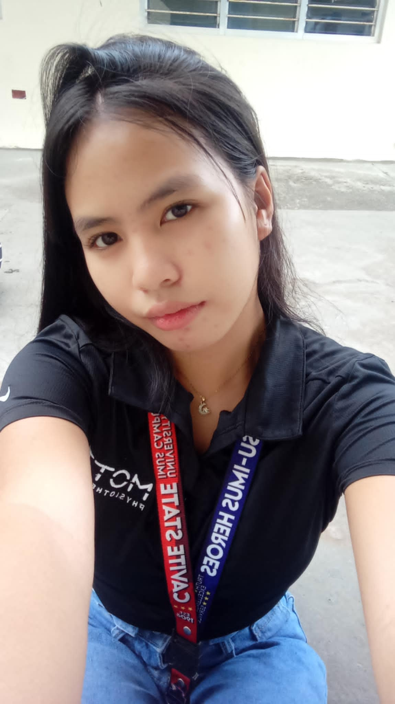
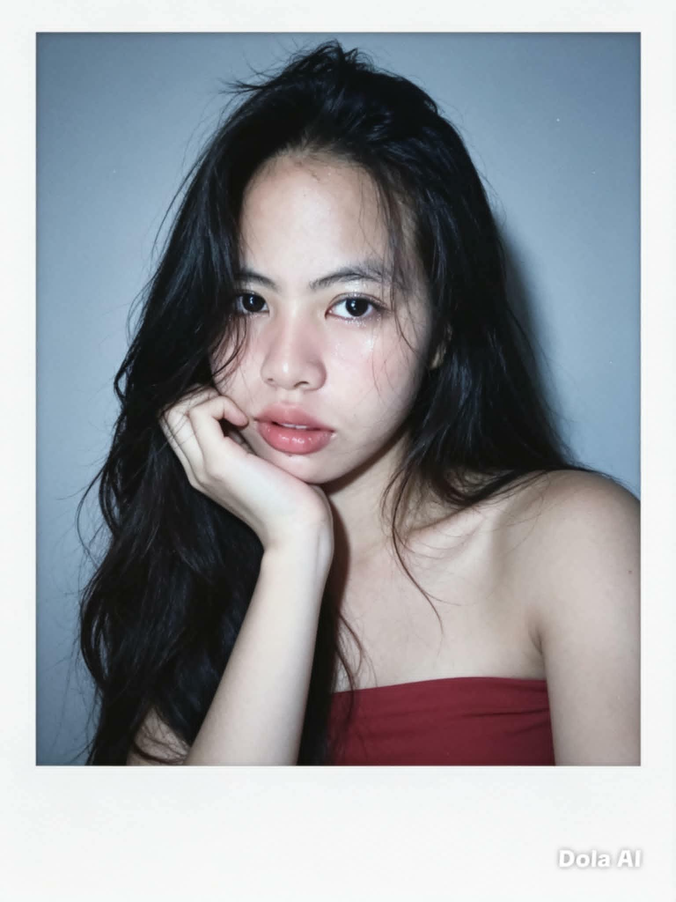
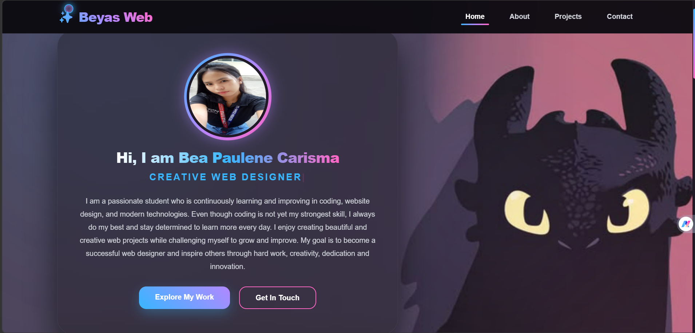
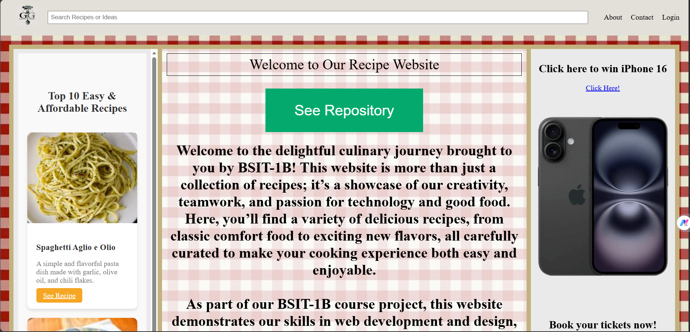
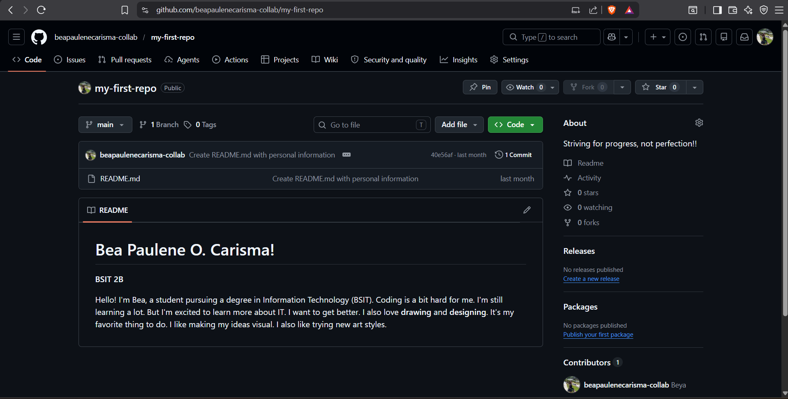

|
I am a passionate student who is continuously learning and improving in coding, website design, and modern technologies. Even though coding is not yet my strongest skill, I always do my best and stay determined to learn more every day. I enjoy creating beautiful and creative web projects while challenging myself to grow and improve. My goal is to become a successful web designer and inspire others through hard work, creativity, dedication and innovation.

I'm Bea, a student pursuing a degree in Information Technology (BSIT) in Cavite State University-Imus Campus (CVSU). I am a passionate student who is continuously learning and improving my skills in web design, coding, and modern technology. Creating creative and modern websites inspires me to become better every day. Although coding is really challenging for me and there are times when I question why I chose this course, I know that I need to finish what I started and learn to love this journey.
Even when projects and coding activities become difficult, I always do my best to keep up and continue learning. I want to improve my knowledge and skills little by little, even if I did not fully like coding at first. My goal is to become a successful IT graduate, make my family proud, and prove to myself that I can achieve my dreams through hard work, patience, and determination. I will never give up on the course I chose, and I will continue fighting for the future that I want.

A personal portfolio website that showcases personal skills, projects, achievements, and contact information.

A modern food recipe website that helps users discover delicious dishes, easy cooking instructions, and tasty meal ideas for every occasion.

A simple and fun TicTacToe game where two players take turns placing symbols to get three in a row and win the game.